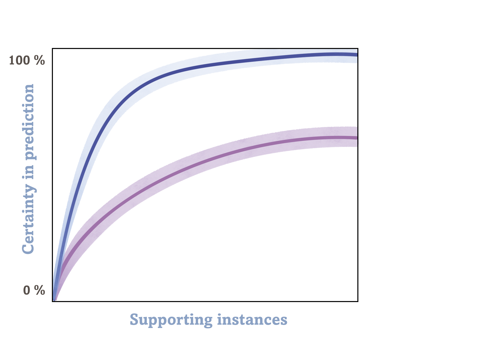
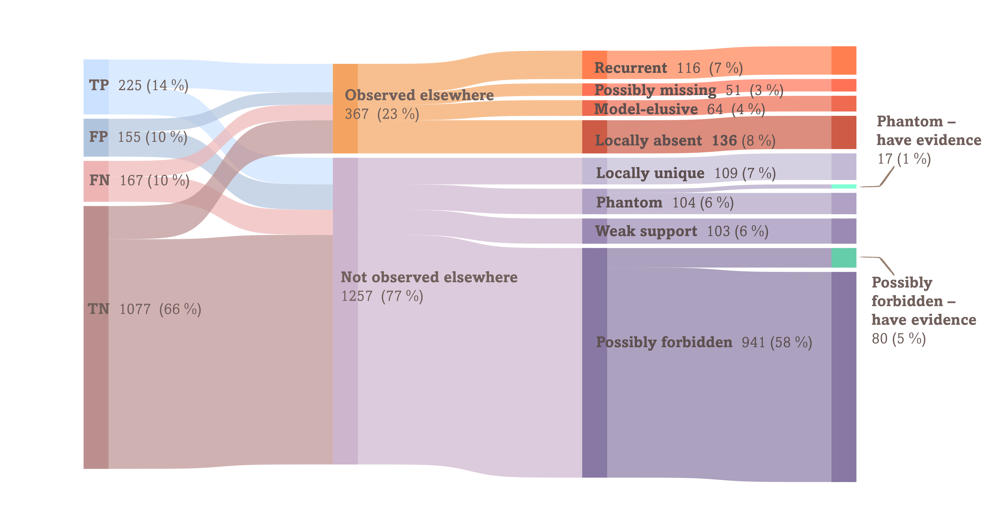

Interactive companions
This is the interactive companion for the paper: Contextual evidence for categorising interactions and guiding their discovery.
A surge of recent methods tackles incomplete ecological interaction data through link prediction. Yet the same data gaps that motivate prediction also obscure how reliable these predictions are. Finding evidence for their existence means going to the field to verify an immense number of potential interactions, possibly with a sampling method poorly suited to the task, or searching for evidence in external sources alien to the system's ecological context. We present an actionable framework that draws on several dimensions of evidence, combining the guidance of link prediction and within-system variability as contextual evidence, to generate a fine-tuned, ecologically aware link taxonomy. This taxonomy pinpoints the most probable holes in a network and directs targeted, cost-efficient discovery actions, while increasing our confidence in predictions.

Section Bayesian Inference & Supplementary Information
Assigning a category is deterministic, but every source of evidence can err. The framework therefore treats the true category as unknown and returns a posterior over all eight.

Section Empirical Demonstration
The framework applied to a real plant–pollinator system: six sites, two sampling methods, and 1624 candidate interactions sorted into where effort is actually worth spending.